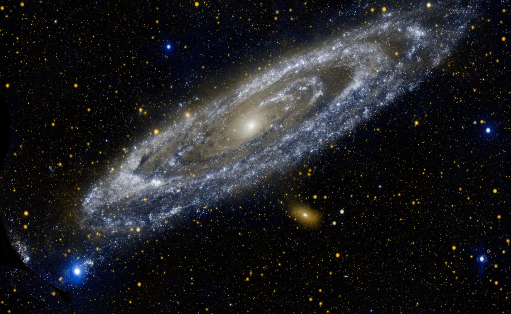

Some of the assumptions that explain about the origin of the Earth include the Big Bang theory, Nebula hypothesis, Interstellar dust hypothesis, and the Creation theory. However, various critiques have emerged against these theories, and hypotheses, though they remain important for understanding the evolution of the universe and the planet Earth in particular.
Nebular hypothesis
This is an hypothesis that explains about the origin of the Earth. The hypothesis was proposed by Immanuel Kant in 1755. This hypothesis states that solar system was formed from cold spinning cloud of gases called the Solar nebular. It resulted from uneven distribution of gases throughout the universe in the Milky Way Galaxy. As the gravitational pull began to condense the gas towards the centre, the speed of the rotation increased.
This caused the cloud to flatten, and created an accretion disk. Matter continued to collect as the force of gravity toward the centre increased. Eventually, the gas warmed from increasing pressure. As the mass further increased, also the gravity increased, and the temperature continued to rise. A ball of hot gas formed in the centre of accretion disk, creating a protostar, also known as the Sun.
Finally, when enough gas gathered in the centre of the protostar, the pressure generated enough heat to fuse the atoms to form a star. Outside the star, matter was forming into clumps of gas, dust and rocks, which created protoplanets that are believed to give rise to the planets. The theory was modified by Pierre Laplace in 1796. The critiques of the theory were put forward by Pierre Laplace who challenged Immanuel Kant through the following: large amount of